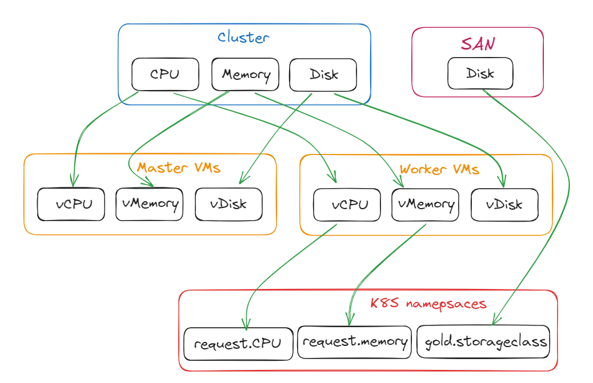

Resource tracking
Nowadays, IT infrastructures are composed of multiple layers. Physical servers, virtual machines, containers, storage,... Each layer is consumer or a producer of resources of another layer. As an IT administrator, we need to monitor resource consumption of a top layers to be sure that we can provide services on underlying layers.
The resource tracking feature allows to monitor reserved resources and highlight available resource in an infrastructure. It's also a way to set quota to
Note
This feature is not a real time monitoring. It does not connect to you infrastructure to check the real consumption but help to follow what resources have been reserved to avoid overallocation when accepting new request from the service catalog.
Concept
VM tracking example
To introduce the concept of attributes, resources and resource groups, lets take the example of a virtualization stack.
A virtualization stack is composed of a group of physical machines, that are added to an hypervisor and create what we usually call a "cluster". The cluster would be, in Squest, a Resource Group.
Everytime we add a new physical machine to the cluster, the total amount of resource available increases. A machine is, in this case, a Resource of the Resource Group.
The amount of resource correspond to the physical server specifications like CPU, memory or disk. Those specs are the Attributes of a Resource.

Starting from the previous state, we can then create a Resource Group for virtual machines that will consume resources from the "cluster" Resource Group.
"VMs" is another Resource Group, with their own attributes named vCPU and v_memory that will consume respectively on attributes from the upper Resource Group "cluster" on CPU and memory.

If we want to add more VMs that consume resources from the "cluster" Resource Group, we need to be sure we have enough physical servers (resources) that produce into it.
Kubernetes tracking example
In this example we want to track the consumption of an orchestrator of container like Kubernetes or Openshift. Namespaces (or projects in Openshift world) are a way to divide cluster resources between multiple users by using resource quota.
Openshift and Kubernetes frameworks are commonly deployed in a virtual machines. So we retrieve layers from previous example with bare metal servers that produce resources in a cluster of our hypervisor.
Orchestrators are usually composed of 2 kind of node: Masters and Workers. Master VMs are used by the infrastructure itself and workers for user's workloads, aka namespaces.
As namespaces are only executed in "worker" nodes, we need to declare 2 different resource group: "Master" and "Worker" VMs.
The aggregation of resources of all workers compose amount of available resources that the namespaces
resource group can theoretically consume.
The complete resource tracking definition would look like the following:

With this definition, we are able to determine there is enough available resources in each layer to handle underlying objects.
Adding a new namespace in the last resource group K8S namespaces will generate more consumption.
If this last layer resource group is lacking of resources, adding more worker node in the Worker VMs resource
group will be required, generating consumption on the upper layer Cluster and so on...